Skills: Research, Cleanroom + Lab Equipment Training, Nanofabrication of 2D Material Devices, Lab Documentation
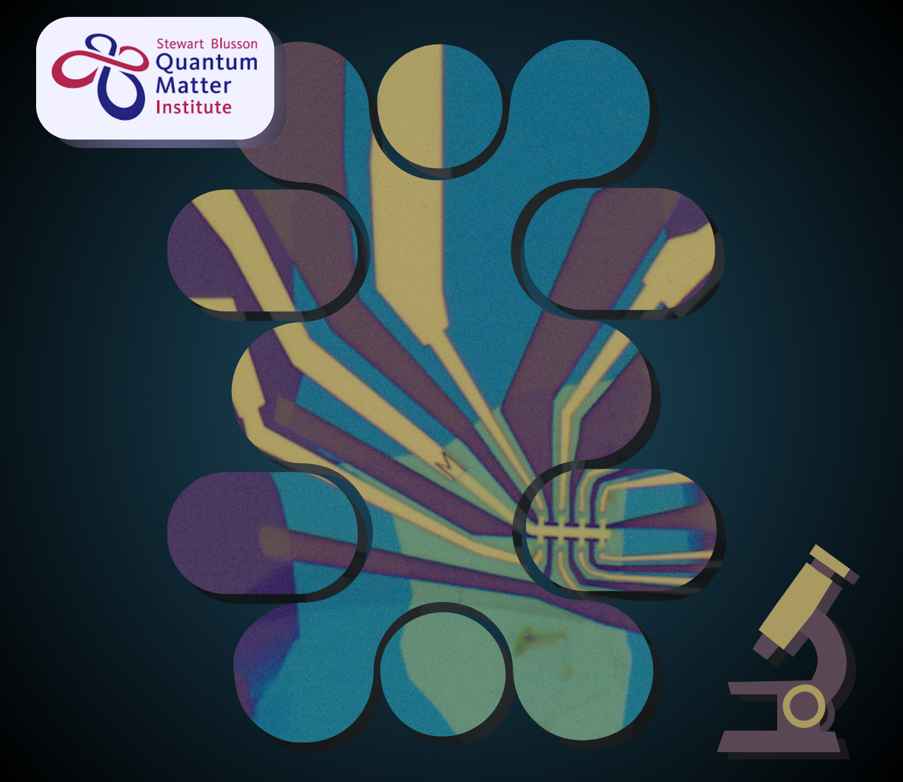
Intro
During my first coop term in January-April of 2023 I worked at Stewart Blusson's Quantum Matters Institute at UBC as a research assistant under Dr. Joshua Folk. Dr. Folk leads the Quantum Devices group, which focusses primarily on 2 areas:
- Building mesoscopic quantum circuits in semiconductors with materials such as GaAs and measuring properties such as entropy
- Stacking atomically-thin ‘2D’ materials, such as graphene and transition metal dichalcogenides, like layers of a sandwich into hybrid electronic devices that integrate exotic properties of each of the constituents.
I joined the latter portion of the group, learning to create quantum devices through nanofabrication with 2D materials, with a focus on twisted double bilayer graphene (explanations on what that means coming shortly)! This webpage will focus more on describing the process of making the devices as opposed to the analysis and measurements.
Table of Contents
Introduction to 2D Materials
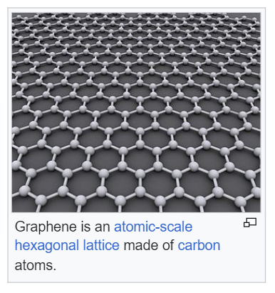
The first question that arises in most people is "What is a 2D material?" Luckily, this is one of the more straightforward terms; a 2D material is a crystalline solid made up of one layer of atoms! It's only an atom thick, so we refer to them as single-layer or 2D materials. For reference, a sheet of paper is at least around 100,000 atoms thick!
One of the most well-known 2D materials, and the object of our research, is graphene. It's a sheet of carbon atoms arranged in a honeycomb pattern (image from Wikipedia's Graphene page) and has been the source of much research in recent years. Take a quick google search on graphene and the world of 2D materials and you'll see countless research papers, all highlighting their findings and applications of this wonder-material.
You may think that such a material would be very hard to obtain or produce, especially considering the fact that it has a thickness on the order of one atom! But, the graphite we use in our pencils is actually made up of layers of graphene, each layer being held weakly together by Van der Waals forces, sliding apart as we write. Given some graphite and scotch tape, we can actually produce graphene sheets!
Imagine having a dense stack of paper sheets and using a piece of tape to "lift" the top sheet off, allowing us to isolate individual sheets. This sort of process is referred to as mechanical exfoliation, and we'll go over it more in the nanofabrication process later!
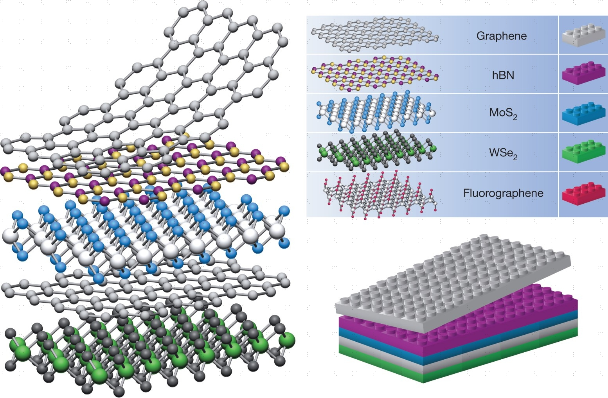
Another 2D material we use in the devices is hexagonal boron nitride, commonly referred to as hBN, for short. It has a similar hexagonal structure to graphene, each layer being bound together by Van Der Waals forces, as well as similar physical and thermal properties (we also mechanically exfoliate hBN) but vastly different conducting properties, which we'll cover later. There are also many other 2D materials, such as transition metal dichalcogenides (like WSe2) and other extraction techniques such as CVD (chemical vapor deposition) that are interesting to look into!
Image on the right is from: Geim, A., Grigorieva, I. Van der Waals heterostructures. Nature 499, 419–425 (2013). https://doi.org/10.1038/nature12385, where you can begin to see the "sandwich" that gets formed by layering these 2D materials atop each other. I only focused on graphene and hBN during my time at QMI, so that's what I'll be going over!
Why do we study 2D Materials?
Why are these 2D materials (2DM) a point of interest? Turns out, the 'flat' nature of these materials allow for extraordinary properties and also exhibit various quantum states. Like any new scientific discoveries, researchers must continue to experiment and analyze 2DM to understand and unlock their true potential in future applications.
Graphene is one of the most highly researched 2DM; its successful isolation and application by Andre Geim, Konstantin Novoselov won them the 2010 Nobel Prize in Physics. It is actually one of strongest materials in the world (if not, the strongest). Often called a 'wonder material', it also boasts incredibly electrical conductivity at room temperature, and even superconductivity (in certain configurations)!
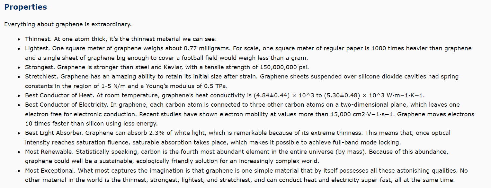
Monolayer vs. Bilayer Graphene, Twisting, and the Magic Angle
In the field of 2DM, we look at monolayer (single atom sheet) materials and few-layer materials.
Monolayer and bilayer (two layers) graphene are of special interest to us., but more specifically, twisted bilayers of graphene!
Twisted bilayer graphene (TBG) is a structure that yields superconductivity (albeit in an unconventional manner having to do with electronic bands, which we will not delve into due to how complex the topic of semiconductors/solid-state physics is); TBG is assembled from flakes of bilayer graphene that are oriented with a 'twist' relative to one another (image from: MZinchenko/Shutterstock.com):

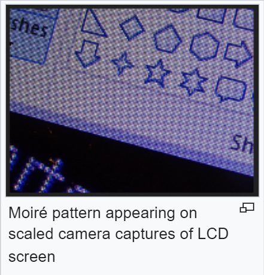
The twist angle of about 1.1 ° relative to one another is known as the **magic twist angle**, wherein we can observe superconductivity (hence the magic name). This slight offset requires high-levels of precision during nanofabrication, otherwise superconductivity will not be observed.
The geometric pattern created by this twist, which can be seen in the image, is referred to as a Moiré pattern! These interference patterns are seen on macroscales as well, anytime a ruled pattern (with transparent gaps) is overlaid with a slight displacement/rotation of a similar pattern. See the image from Wikipedia on the right.
Van der Waals Heterostructures
With some fundamentals established, we can start exploring the devices made from these 2DMs!
At work, I focused on creating Van der Waals heterostructures. These are structures composed of vertically stacked 2DMs, held together by Van der Waals forces between each layer.
Imagine a sandwich, where we must choose each ingredient carefully, to give us our desired flavor profile. Now, consider that the sandwich exists on a nanoscale, and each ingredient is a 2DM, which we must be careful in handling as we don't want to introduce any defects or folds that will affect the topography of the material. Perhaps this analogy is better suited to the worlds flattest, smallest panini, but I hope the idea is sufficient in setting up the concept...
Twisted Double Bilayer Graphene Devices
The type of Van der Waals heterostructures I learned to create were Twisted Double Bilayer Graphene devices. These are made with hBN, graphene, and graphite. hBN is an insulating material, so we use it to prevent the graphene layers (which are conductive) from contacting each other and causing shorting, when we later measure the devices (more on that in the nanofabrication process).
Here's the format for our quantum sandwich!
- A top hBN layer
- A twisted double bilayer graphene layer (two layers of bilayer on top of each other, hence the 'double')
- A bottom hbN layer
- A bottom graphite layer (several layers of graphene)
See this image for an example stack, which shows the microscope images of each layer. Note the very pale purple of the bilayer graphene and, in contrast, the darker vibrant colors of the hBN and graphite (which are considerably thicker).
These hBN flakes are chosen to be big enough to cover our bilayer graphene, as these structures rely on Van der Waals forces to stick together, so contact area must be large to ensure stability when creating this sandwich.
Graphite itself is conducting, and will be later used as a bottom gate. A top gate is instead deposited on the heterostructure using a metal evaporator, creating contact areas for us to apply voltages (and generate an electric field, like a capacitor (top and bottom gate/plate))

These materials are assembled in a stack, transferred to a silicon chip, and then etched to create contacts and gates which we design via KLayout. This is similar to how one can send files to a laser cutter to cut shapes; in our case, we want to cut away "stencils" so our metal is only deposited on the areas we want. We also use it to etch away the 2DMs so our contacts are not in danger of shorting and different layers of the VDW structure can be accessed (electrically).
Here's one device that was made; The dark purple is the silicon chip, the blues/greens are hBN and yellow is gold (very hard to notice the graphene and graphite without knowledge of how they looked prior)! Not to worry if its unclear what is going on, I'll do my best to explain in greater detail in the following section.
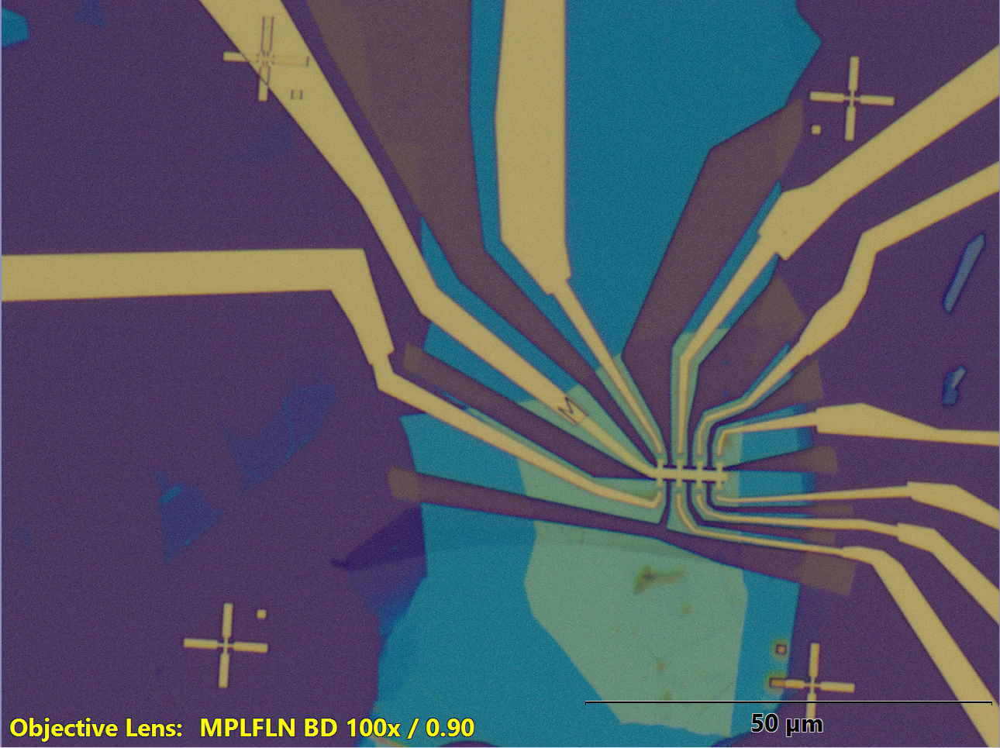
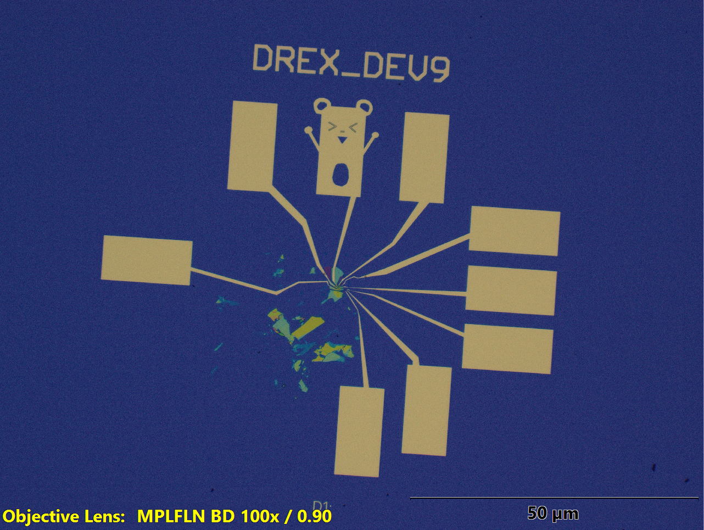
Nanofabrication
Exfoliation
We begin with exfoliation, which was mentioned earlier! Mechanical exfoliation is performed using tape to get flakes of hBN and graphene. These flakes are deposited on a silicon chip (which we get by cleaving a large silicon wafer into small rectangles):
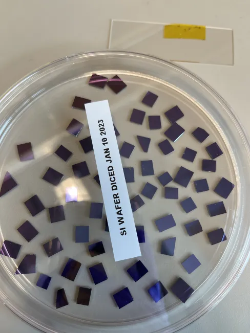
The process for mechanical exfoliation (simplified) is as follows: We take a chunk of graphite, putting a piece of tape across it to take off an initial layer (which is usually still quite thick). The tape, now covered in thick layers of graphite, is folded over itself repeatedly, so that we can separate the layers into thinner and thinner flakes, taking care not to overlap areas that already have flakes (otherwise tape residue will be left on the flakes, making them unusable).
Here's a microscope image I took of the tape, with its graphite flakes!
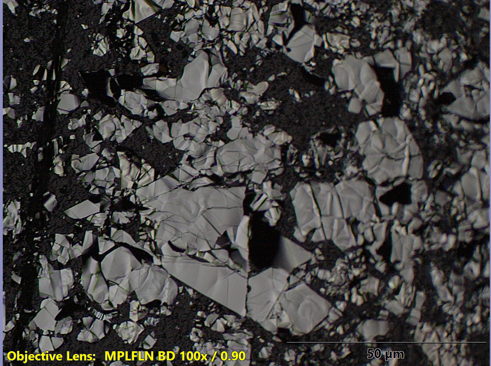
Note:An important thing to be aware during lab work is cleanliness and documentation, especially when working in nanoscale environments, where a speck of dust can cover an entire device. Heavy emphasis is placed on keeping things clean and recording everything at each step; details are crucial during review processes to know what worked and what didn't. In this webpage, I'll only go through the conceptual steps and not the specifics, but a lot of work was put in by the researchers to experiment and finetune the details of the process I used.
The tape, now covered in thin flakes, is pressed down hard onto a series of silicon chips (cleaned and heated), then heated to ensure the flakes remain on the chip after we remove the tape:
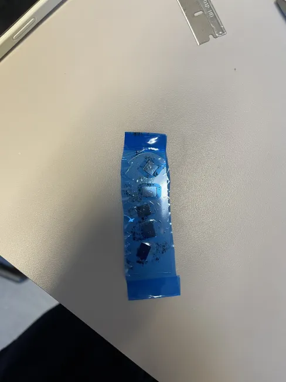
We remove the tape after it cools down, being careful to move at a steady, slow rate such that our newly exfoliated flakes will stay on the silicon chip! Then, we take these chips holding our graphene/graphite flakes under the microscope and note down the locations of good flakes! Once again, because we're working with such small things, we need to make sure to note down locations in detail so these nanometer sized flakes can be found later on.
A similar mechanical exfoliation process is used when getting our hBN flakes.
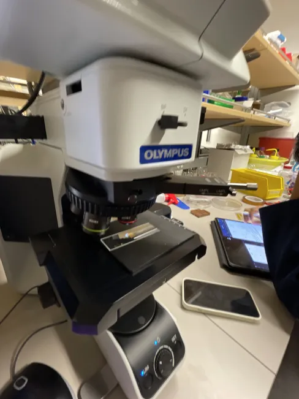
What are some qualities that we look for when examining chips?
- Size
- A minimum size; we want flakes to be large enough that we can actually feasibly define features on it. The precision of our machines is limited; if the flake is so small that we cannot deposit metal on it accurately enough, or etch accurately, then there is no point in fabrication and measurement. Imagine trying to write on a 0.01cm x 0.01cm piece of paper with thick felt-tip marker!
-
Graphene: We want flakes as large as possible. Big monolayer and bilayer graphene pieces are valuable, since they let us design devices with more contacts/measurement points at once. These are hard to come by when we exfoliate because of how fragile they are, often you will see torn mono/bilayer pieces or flakes that have folded on themselves (no longer the thickness we want).
For twisted double bilayer graphene, we require bilayer graphene flakes that are especially large, because these are going to be essentially halved and layered on top of each other.
Why can't we just use two separate flakes of bilayer graphene, rather than having to split a large one? This is because of the twist angle required for our moiré pattern/superconductivity! We know for a fact that the geometry/pattern within one flake is consistent, so we can rotate one half and place it on top of the other for the desired twist angle. If we used two separate flakes, we have no idea which way their patterns are oriented (as this is not observable on the standard microscope) and it is near impossible to get the proper twist.
This is another reminder of the kind of certainty required in nanofabrication. It is a lengthy process requiring high precision; if our fillings are already contaminated/incorrect, then there is no reason to continue making the rest of the sandwich...
Examples: Note how faint these flakes look in the 20x/5x screenshots! It often takes a good chunk of time going through each chip on the microscope, as we need to closely inspect every surface for potential flakes to use, but practice makes things a lot faster over time! And I got a lot of practice...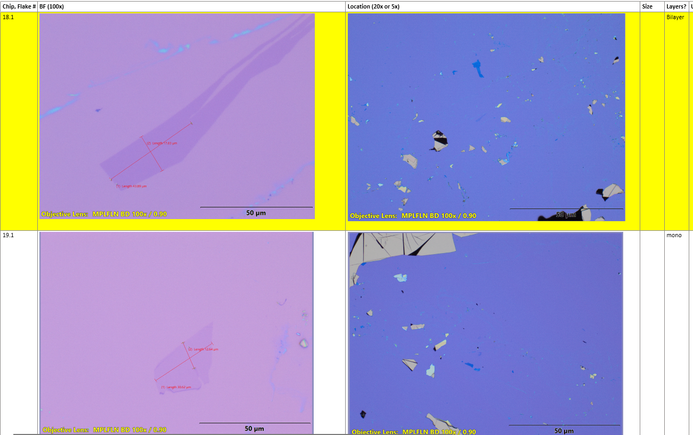
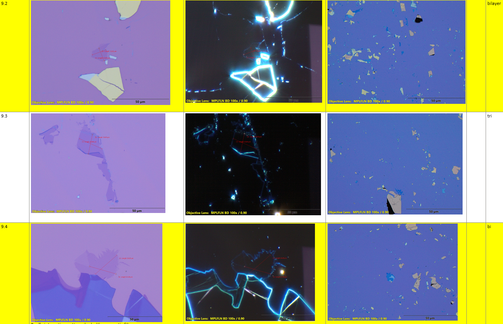
-
hbN: We want flakes that are in the blue/green hued range, as these offer a thickness that can be etched away in reasonable time, but are still thick enough to provide proper insulation between gates/graphene. If graphene is the filling, then hBN carries the vital role of bread in our quantum sandwich! These flakes need to be big enough to cover our filling/graphene so their VDW forces keep them attached when we stack later on.
Note that the top and bottom hBN flakes that we choose for our device need to be different sizes. The top hBN (which we place first) needs to be larger than the bottom hBN. For a crude analogy; imagine a big magnet the size of your palm, and a smaller magnet the size of a coin. The big magnet picks up the small one easily, while the other way around is not true. We need the top hBN to have greater VDW attractive forces (more contact/surface area) to keep the bottom hBN attached, otherwise our sandwich falls apart!
Example:
-
Graphite: We want stick shaped graphite pieces! Compared to graphene, we see a lot more of these, as they're quite thick and resilient to etching compared to their counterpart monolayer flakes.
Some examples:


- Cleanliness + smoothness; we want our surfaces to be relatively flat and clean. No tape residue, no big bumps or crowded neighbours, or that would make assembly difficult later. For uniform properties, we need a uniform surface without defects.
Note: You might wonder how we determine the thickness of the graphene flakes just based off microscope images! Well, one of the researchers, an upper year classmate of mine (also in Eng Phys!) created a python script that determines graphene thickness based off the colors in the image. We take screenshots of the flakes with the specified image settings, then run the script to determine thickness. Eventually though, you see enough flakes that you can estimate thickness by looking, making it a lot easier to weed out unusable flakes.
For hBN flakes, their thicknesses are much easier to approximate and pick because we do not monolayer level precision. My coworkers and I created a 'palette' of hBN colors and corresponding thicknesses by using an AFM on a range of hBN flakes.
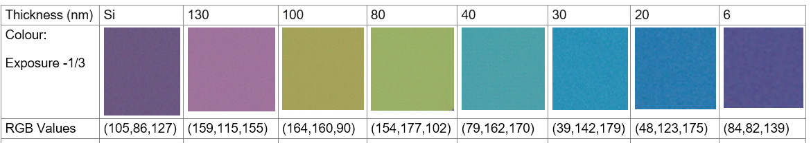

Stacking
Now that we have our ingredients ready, we can begin our sandwich assembly! This is done with a machine that we call the "stacking machine" (surprise!). It allows us to systematically pick up flakes from chips and transfer them one by one. The machine was built in the lab! It has microcontrollers allowing us to precisely maneuver the silicon chips to find our flakes and rotate for twist angle, a heat-able block where we place our chips so that they can be heated and cooled, as well as a microscope to see what is going on! We use a glass slide with a small hemispherical stamp that is used to pick up flakes; if you've seen nail art videos, it is exactly like the stamps they use to pick up painted patterns from a slide.
We first begin by picking our flakes and making sure their sizes are compatible for making a heterostructure (based on the criteria explored in exfoliation). I do this on google slides, layering microscope images (taken at the same scale) and aligning them atop each other to see how the device layout will look like! This helps during stacking, as I know what orientation to put them in. Flakes are usually asymmetrical, so its crucial to make sure the sizing and orientation is planned out properly, or else we will have to rechoose (stacking itself takes around 2 hours).
Example (chip numbers are noted down and relative sizes are compared):


I prepared some graphics that might explain the process better (since I have no pictures of the setup, sorry!!). There are many details of stacking that I could go into, such as all the things I learned about speed, temperature, time affecting that could lead tearing, folding or not picking up flakes. However, this webpage is already shaping up to be quite long, so I'll spare you the details.
We assemble every layer by first picking up our desired flake from the chip it is on; we exfoliate many chips at once, so they normally are on different ones (graphene/graphite are separate from hBN).Here is how the picking up process works (simplified):

This is what happens at each layer, as we pick up each 2DM, growing our stack on the stamp. However, for our twisted double bilayer graphene, we need to do some extra steps to get the proper orientation/twist angle.


This concludes our stacking process, as we are left with a stack of 2DM ready to be processed and shaped into devices!
Example stacks:


Landing
With our stack complete, we now need to 'land' it on a clean, marked silicon chip! These have etched alignment marks that are useful for locating our stacks and for designing (our next section). The chips are examined for any dirt prior to cleaning, and are later plasma-etched in the cleanroom (a very sterile, dust-free environment) Excerpt from my lab-book:

The cleanroom at QMI we used can actually be seen on QMI's website! The embed for the layout is here, try taking a look to see what it's like on the inside!
This is how I look preparing to use the cleanroom (don't worry, phones are sanitized with IPA and gloves/shoes are put on before entering). Many filtration systems are in place to keep the flow of dust out of the rooms, and entering the cleanrooms requires passing through 3 rooms of increasing sanitization, as you put on more protective/clean layers.

The machine we use in the cleanroom is the plasma etcher, which uses plasma to remove material from the surface of our chip. Landing the stack is very similar to its creation; we essentially press the stamp down very rapidly onto the clean chip, which has been heated up. Example of stacks that have been landed on a chip:

Afterwards, we need to remove the film that is still left on the stack; we can't have residue left on it as we need a clean surface before proceeding. This is done by soaking it in chemicals, though we need to be careful not to let them soak too long, as there are instances where the stacks themselves come off with the film (nightmare, as we're hours into the production process now!). Example of a stack, soaking for a few hours to remove the film:
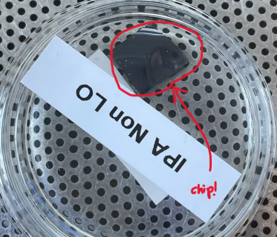
Once they are cleaned of film, we spin a protective layer of PMMA; the process is referred to as 'spinning', as we place a drop of PMMA fluid on the chip while in a centrifuge, which spins fast enough to distribute the drop evenly over the chip, creating a thin, protective layer. It will be used between every step from now on, as we use this film to act as our 'stencil base'. An example is shown below of a chip that has been spun. The colors are quite different due to the added thickness of the film!

Designing
With our stacks landed, cleaned and protected with a layer of film, we begin designing the devices. Our sandwich of 2DMs has been assembled, but we now need to plan how to shape it into its final form! The software that is used for this is KLayout, an application that allows us to export our designed 'stencils' to the JEOL, a lithography system (draws designs, in this case, onto our chips).
From: https://www.nanofab.ubc.ca/equipment/photolithography/ (other machines can be found online by googling QMI equipment!):
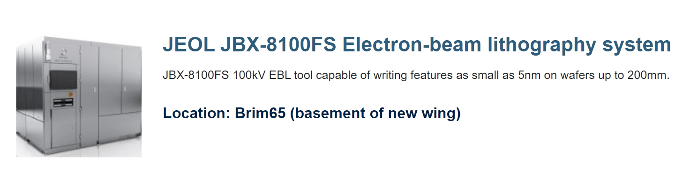
Back to KLayout; we import our microscope images post spinning and take those alignment marks from before (!!) and line them up with the corresponding marks that have been imported into the application (when the clean chips were initially etched). This lets us design accurately, as it offers a way to precisely line up our designs with the actual location of the stacks. This is an example of a design we did for a stack:

(Zoomed out photos; the green rectangles are our bond pads, which are connected to a contact (the blue hand shapes) and will allows us to read the voltage at that point in the graphene)

Each layer is marked with a different color and label for ease of export!
During designing we look out for a couple of key things, though I won't go into too much detail; our top gate (made of metal and colored in yellow) has to be above our bottom gate (the graphite), like a capacitor whose plates need to be aligned to be functional. It has little 'arms' that stick out in the shape of a 'Hall Bar' that are convenient to measure voltage/resistance from. The areas of 2DM between each contact also need to be 'etched' away for insurance! We don't want there to be any metal or 2DM that can conduct and cause shorting between contacts, otherwise we won't be able to read the different locations of the device (they'll all give the same reading if electrically connected).
These design files are then exported in each step, starting with the top gate.
Top Gate
Since we were not trained to use the JEOL machine, one of our supervisors would complete the lithography for us. Once the chip was returned and developed, leaving a stencil cut out from the PMMA film, we could head to the Dee-Director, a machine co-created by our lab head, Dr. Folk.
Example:

The Dee-director is a machine that evaporates metal; it heats up metals to high temperatures in a vacuum environment that evaporates onto whatever is loaded in the sample holder (our chip), coating the entire surface in the metal of choosing. For our purposes, we usually use gold/chromium.
After developing and liftoff (cleaning the stencil and the excess evaporated metal off):
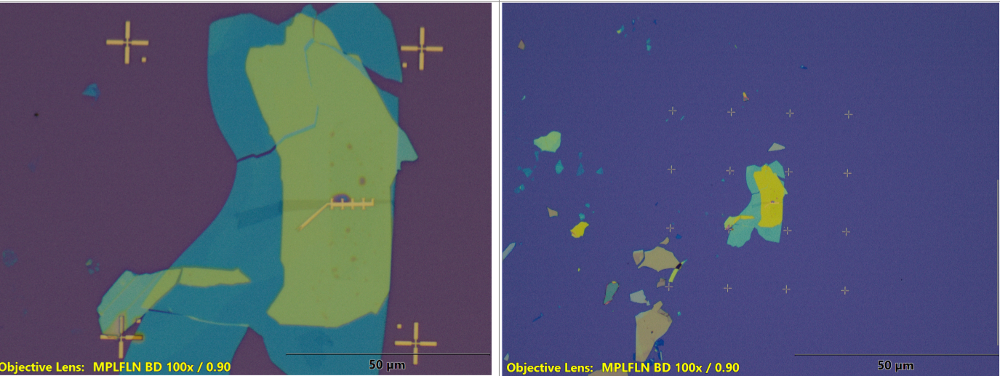
Hopefully this makes it clearer why we need to spin and develop our stencils; the metal will just coat everything to a desired thickness, so PMMA and lithography is used to keep the metal only on the areas we want. We clean and spin another layer of PMMA again for the next step!
Contacts
With our top gate completed, we can move onto our contacts, the little arms that help us electrically contact our twisted double bilayer graphene! This follows largely the same process as the top-gate, however, we need to get rid of all the material where we want our contacts by etching first! This is so that the metal can actually read the voltage of graphene in that area, rather than sitting on top of the hBN like the top gate.
Example of contacts:


We clean and spin again before moving onto the next step!
Device Shaping
Here, we etch away excess material using the plasma etcher to prevent shorting, essentially dividing our device up by contacts. Unlike the last two steps, since we're just removing 2DMs, we do not need to evaporate any metal onto it!
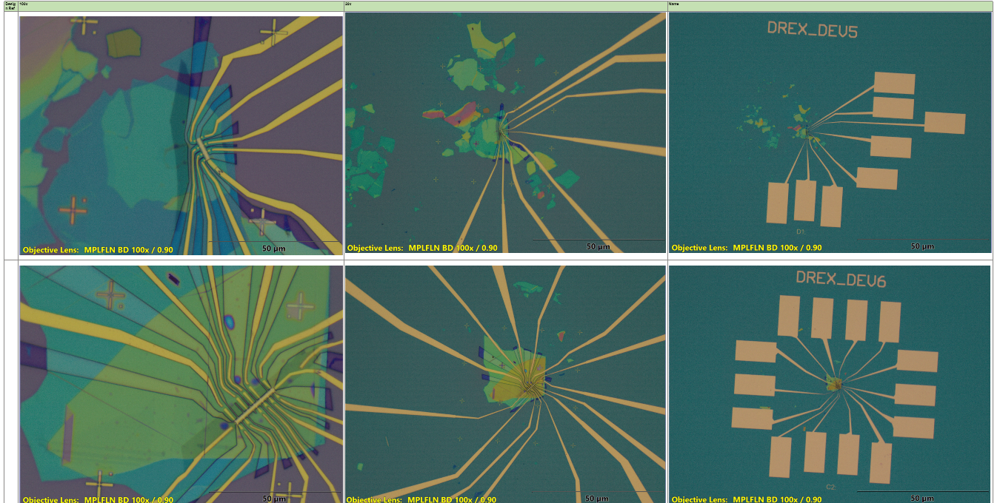

Our devices are now ready for measurement (almost!). At this point, it has been several hours of nanofabrication, and we are rewarded with devices that are visible (somewhat!) to the naked eye!!!

Measurements
Now, how do we measure these devices? This is a great question... we begin by connecting the bond pads (those rectangles you can see with your eyes) to a chip carrier that gets plugged into the measurement setup. We connect them by using a wire bonding machine! Imagine little 3d printer, but instead of filament, it extrudes very thin, fragile wire capable of conducting and transmitting those voltage/resistance readings from the device to our chip carrier.
Image from Wikipedia article on wire bonding! Their device is much more complex, but the process is the same. You can see the gold wires that are attached to the pads on the chip in the center, and then on the larger gold pads on the carrier itself. The chip is bonded using some sort of conductive glue that holds it in place.

Learning to use this machine (alongside the Dee Director) was one of the most tedious processes in the nanofabrication journey, as the wire would often break due to how fragile it was or fall out of the holder, requiring us to rethread it with a precision that makes regular thread and needles feel gigantic. But as with all the other things , it got easier with time and practice.
Here's an example plan; we bond the wires according to this, so that we know which pins are being used.
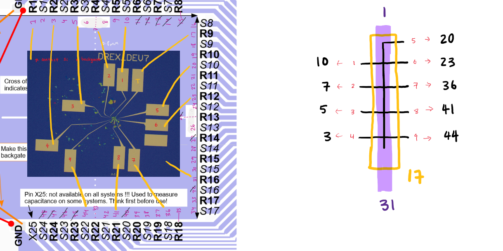
We then measure resistances in a probing station, checking for any broken connections, faulty materials (improper gates or insulators), or shorting.
Tested devices are then dunked into a helium dewar, allowing us to reach temperatures as low as 4K! Voltages are controlled via a breakout box, as we examine pairs of contacts, checking their resistances at different gate voltages. The goal is to map out voltage as we increase and decrease the bottom and top gate voltages, to note the features. I will not go into detail about the data collected, but it was very interesting seeing how the results varied across some devices, that went through (seemingly) identical processes! It really brought out the difficulty of manufacturing quantum devices, as almost 80% of the time (at least in my case) was spent on nanofabrication of devices, and the measurements that we did get often did not match up to expectations!
This experience has only given me deeper respect for those who work in academia and research; it's many long hours of experimenting and documentation, failed attempts, reiteration and theorizing (as well as a lot of learning, as these labs are often covering areas of knowledge and experimentation that few other groups have published on). The scientific advancements of our modern age are able to exist because of these individuals and because of the passion that they have for their subjects. While it may seem niche and unnecessary to some at first glance, because of the breadth of every field and all the unknowns (especially in the quantum realm), we require extensive data and research before anything can be applied. Graphene will only ever be able to reach its potential as a wonder material, if we continue to study it.
I was only able to learn this very small portion of 2D materials during my coop at QMI, but during this time I was able to explore a whole new field, discover what lab work is like, and meet some of the most intelligent and hardworking individuals. Pick up any paper regarding this topic, and you'll see how densely packed every sentence is with centuries of physics, all accumulating as we continue in our search for greater knowledge. Thank you for reading! I know this was particularly lengthy and perhaps a little bland due to the non-existent solid state physics knowledge I have, but I strongly encourage you to read more about 2D materials and QMI research online, as this field is so deeply interesting!